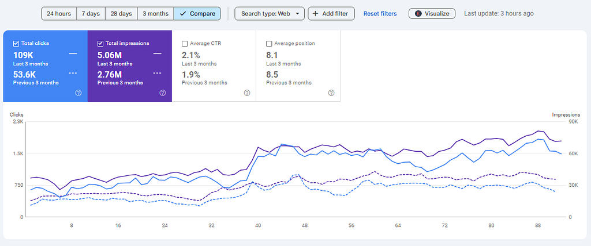
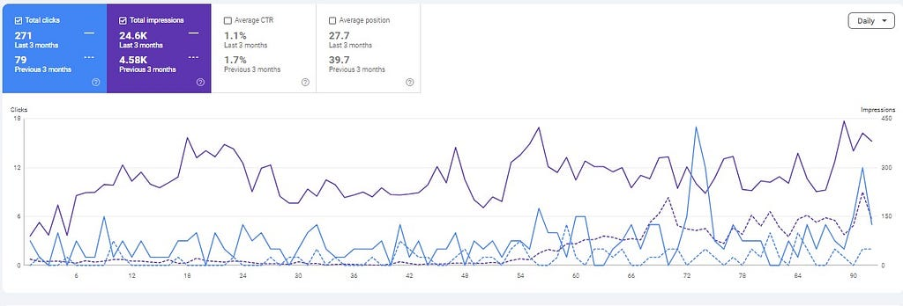

Selected work / Original evidenceSEO case studies.
The challenge, the work and the outcome. Each project includes the original Search Console screenshot and a transparent reading of its metrics. The figures shown are for the latest three months in each comparison.

HealthcareA healthcare platform with an established search presence, but room to turn its existing exposure into more organic clicks. The project combined search-result presentation, structured data and mobile experience improvements.
109KOrganic clicks
5.06MImpressions

Technical SEOA technical recovery project for a software and automation website with very limited organic search activity. The focus was on removing discovery barriers and making commercial pages more relevant to the people searching for its solutions.
652Organic clicks
43.8KImpressions

HealthcareA medical specialist’s website needed to establish visibility in a landscape occupied by larger healthcare providers. The project organized content around patient questions and connected related topics through internal links.
1.57KOrganic clicks
160KImpressions

HealthcareA new nutrition and supplements website needed to develop its organic search presence in a trust-sensitive category. The work combined evidence-supported content with an internal-linking structure connecting related content and products.
434Organic clicks
23.3KImpressions

Local SEOA local used-furniture website competing for searches with buying and selling intent. The work connected category-page relevance with mobile usability and server-response improvements.
271Organic clicks
24.6KImpressions